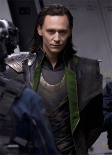
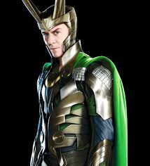
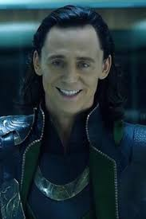

Disney и Marvel Studios объединят усилия для создания сериалов, посвященных второстепенным персонажам киновселенной. Как утверждает издание The Hollywood Reporter, проекты будут представлены на новой площадке - собственном потоковом сервисе Walt Disney, запуск которого планируется в 2019 году.

Первыми героями, заслужившими персональное телевизионное "расширение", станут Локи и Алая Ведьма. Исполнившие эти роли в полнометражных фильмах Том Хиддлстон и Элизабет Олсен, сыграют своих персонажей и в сериалах.

Отметим также, что Локи является одним из самых популярных героев киновселенной Marvel. Он появлялся в фильмах о Торе, а также командных картинах из серии "Мстители". После событий третьей серии дальнейшие перспективы этого персонажа остаются неизвестными.